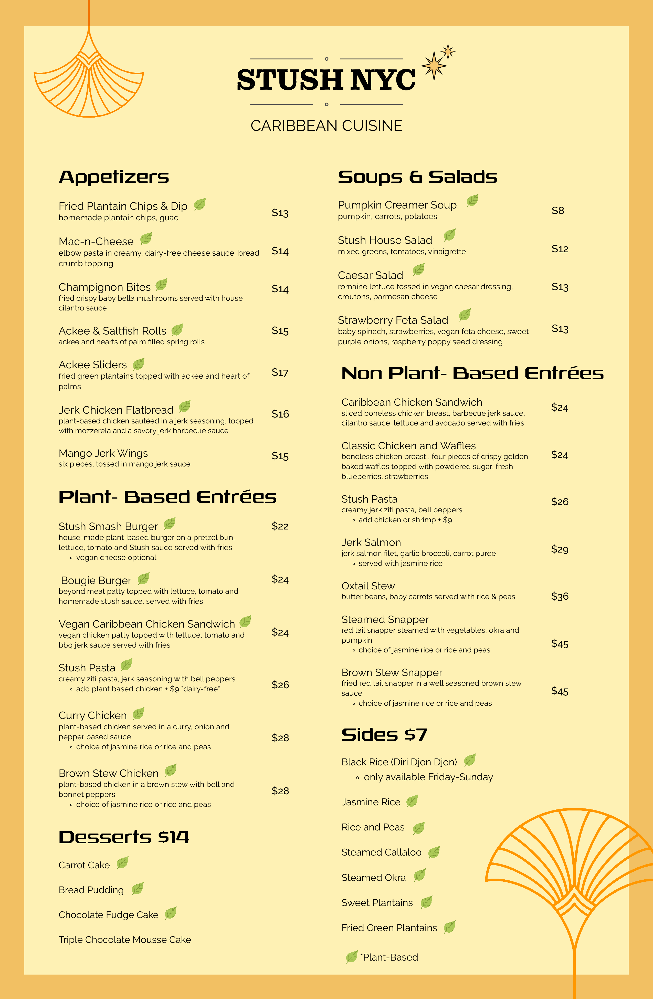
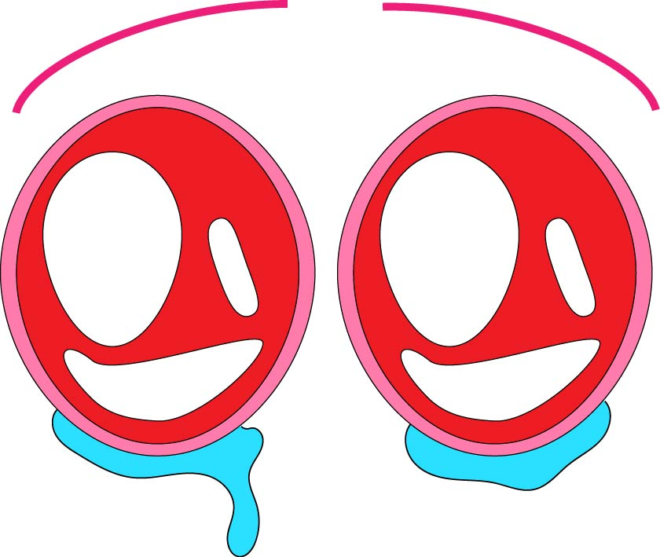

WEB ART <3
STUSH
I designed a menu for a Caribbean Vegan restaurant in Williamsburg with Adobe Illustrator
SAD EYES
I crafted a pair of sad eyes for my "Media and Film in a Digital Age" class during my Junior year at Hunter College with Adobe Illustrator
